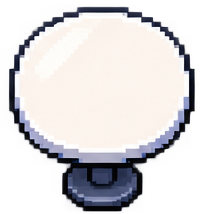
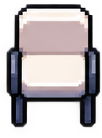
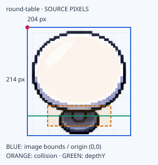
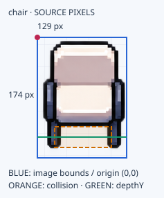
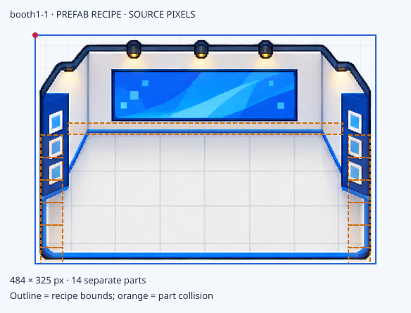

ภาพหนึ่งแบบ ข้อมูลใช้งานครบใน card เดียว
ตัวอย่าง asset catalog จากภาพจริงของ Editor มีกรอบภาพ พื้นที่ชน แนว depth และตัวละครพร้อมเลขเฟรม ขนาดฐานบน blueprint ที่ยังไม่มีหลักฐานแสดงเป็น unresolved
ภาพ PNG เป็นสำเนาจากโปรเจกต์เดิม ตรวจตัวเลขกับไฟล์ต้นทางแล้ว ยังไม่ได้รันเกมหรือรับรอง artwork ในรอบนี้ ค่าขนาดแสดงอ้าง seed TMJ ไม่ใช่แมปฉบับล่าสุดในฐานข้อมูล
เทียบสัดส่วนที่ขนาดแสดงเดียวกัน
แสดงที่ 1 world px = 1 CSS px ก่อน browser zoom ช่องพื้นด้านหลังคือ 32 × 32 px ภาพตัวละครรวม padding จึงไม่ควรใช้กรอบเต็มแทนความสูงตัวคน

round-table122.4 × 128.4 px

chair83.85 × 113.1 px
กรอบ 115.2 × 102.4 px
round-table

chair

booth1-1

ขอบเขต recipe: 484 × 325 source px
ขอบเขตภาพแสดง: 300.08 × 201.5 world px / 9.3775 × 6.2969 tile
Blueprint footprint: unresolved
ใช้กรอบ recipe เป็นขนาดภาพรวม ส่วนฐานและพื้นที่ชนต้องระบุแยก ภาพประกอบนี้ใช้ดูเอกสาร เกมยังใช้ภาพแต่ละชิ้นเพื่อจัด depth
ดูชิ้นส่วน 14 ชิ้น
| Part | X,Y | W×H |
|---|---|---|
| booth1-1-back | 0,0 | 484×142 |
| booth1-1-floor | 47,142 | 390×183 |
| booth1-1-left-0 | 0,142 | 47×32 |
| booth1-1-right-0 | 437,142 | 47×32 |
| booth1-1-left-32 | 0,174 | 47×32 |
| booth1-1-right-32 | 437,174 | 47×32 |
| booth1-1-left-64 | 0,206 | 47×32 |
| booth1-1-right-64 | 437,206 | 47×32 |
| booth1-1-left-96 | 0,238 | 47×32 |
| booth1-1-right-96 | 437,238 | 47×32 |
| booth1-1-left-128 | 0,270 | 47×32 |
| booth1-1-right-128 | 437,270 | 47×32 |
| booth1-1-left-160 | 0,302 | 47×23 |
| booth1-1-right-160 | 437,302 | 47×23 |
kaguya

Frame: 288 × 256 source px · scale 0.4
กรอบเฟรมในโลก: 115.2 × 102.4 px
กรอบชนในโลก: 25.6 × 12 px
Feet anchor: (144,240) source px
กรอบเฟรมรวม padding ไม่ใช่ความสูงตัวคนหรือพื้นที่ชน
frame 6
การเล่นนี้ใช้ดูเฟรมในเอกสาร ไม่ใช่การทดสอบ physics หรือ Phaser
ดู spritesheet ทั้ง 24 เฟรมพร้อมเลข
จาก catalog ไป blueprint
round-table คือแบบของสิ่งของ ส่วน T01 / T02 คือโต๊ะคนละตัวที่อ้างแบบเดียวกัน พิกัดและจำนวนของแต่ละตัวเก็บในเอกสารแมป
ถ้า blueprint อ้างฐาน แต่ Editor อ้างมุมภาพ ต้องกำหนด footprint offset และแปลงก่อนวาง ห้ามใช้ขนาดกรอบภาพหรือ collider แทนฐานที่ยังไม่ได้กำหนด
Catalog ใช้ภาพเพื่ออ้างอิงหน้าตาและ metadata ส่วน TMJ เก็บการวางจริง เมื่อมี tool ควรสร้างหน้า catalog จากข้อมูลชุดเดียวกับ TSJ/config